Radar inteligente
Recomendações que consideram o seu tempo, sua agenda e seus interesses.
AGORA ↗Horários, vagas, comunicados, eventos e lugares. Tudo conectado a um assistente que entende o que importa para você agora.
Explore a oficina de IA antes da sua próxima atividade.
Ver meu próximo passo ↗Laboratório 07 • bloco B ↗
Um estudante precisa consultar horários, procurar vagas, acompanhar avisos e descobrir eventos. Quando cada coisa está em um lugar, oportunidades passam despercebidas.
O desafio não é criar mais um mural de informações. É transformar dados dispersos em orientação prática.
Agenda e próximos compromissos sem procurar em vários canais.
Vagas, projetos e eventos ligados aos interesses do estudante.
Um mapa conectado às atividades e ao próximo destino.
O Radar do Campus cruza quatro sinais: tempo disponível, agenda, interesses e oportunidades. Em vez de uma lista infinita, mostra uma próxima ação realmente útil.
Testar o RadarUma experiência pensada para estudantes do ensino técnico: rápida no celular, clara na rotina e conectada ao futuro profissional.
Recomendações que consideram o seu tempo, sua agenda e seus interesses.
AGORA ↗O que vem a seguir, onde acontece e quanto tempo falta.
Descubra estágios e projetos alinhados à sua área.
Dúvidas e orientações em linguagem natural, com integração Gemini preparada no servidor.
Do próximo compromisso à localização ilustrativa em um toque.
Um passeio pelo SENAI Taguatinga em fotos: da entrada aos espaços de convivência e aos murais de oportunidades. Toque em uma imagem para vê-la inteira.
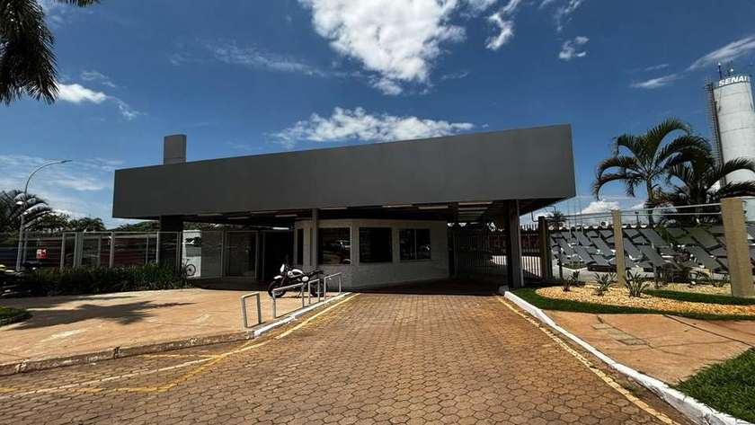
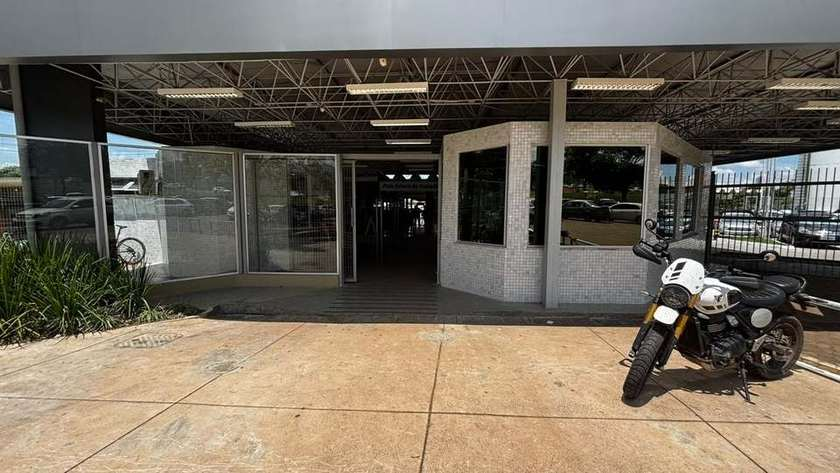
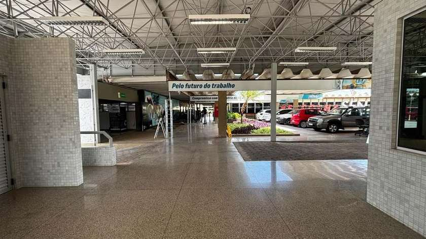
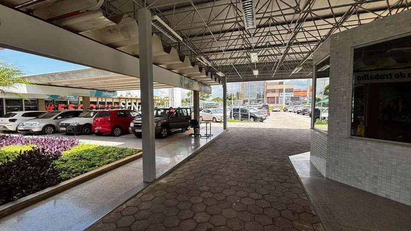
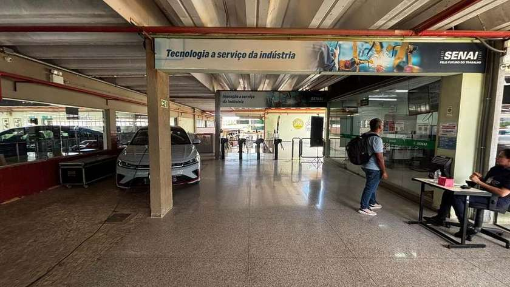
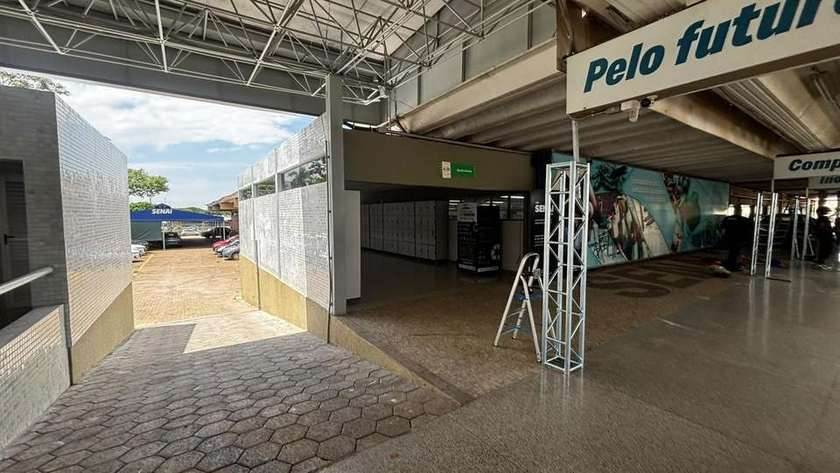
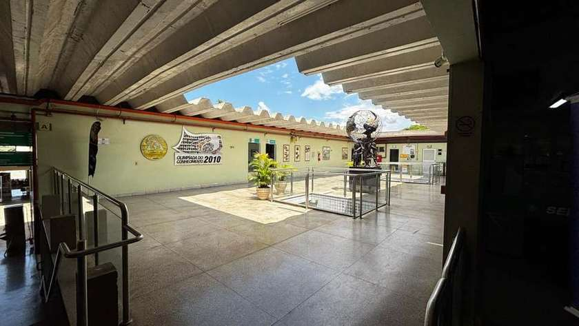
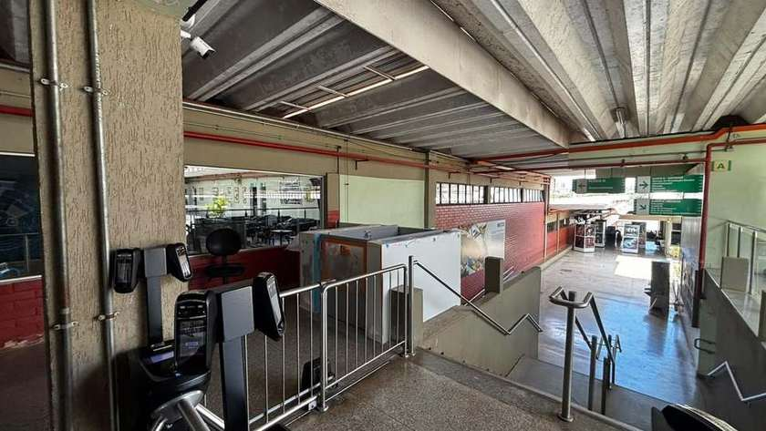
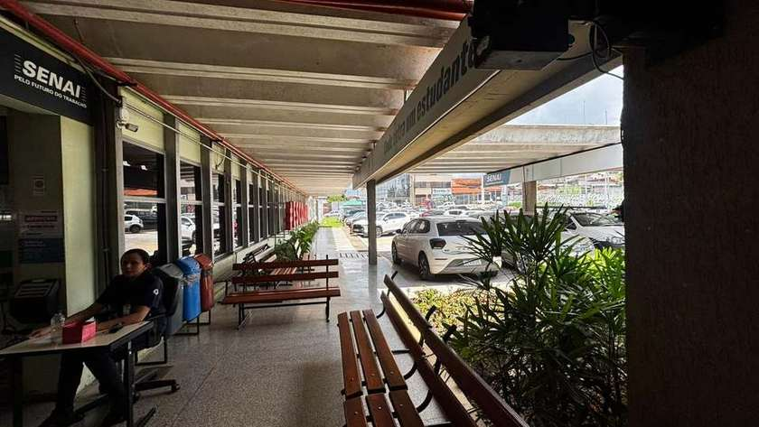
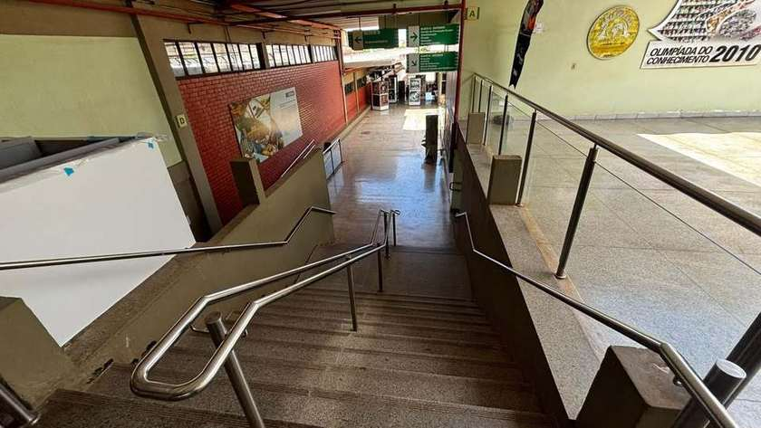
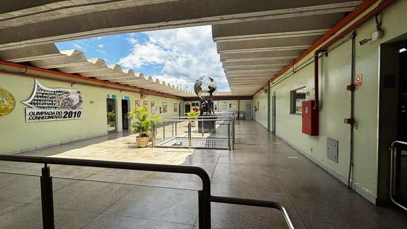
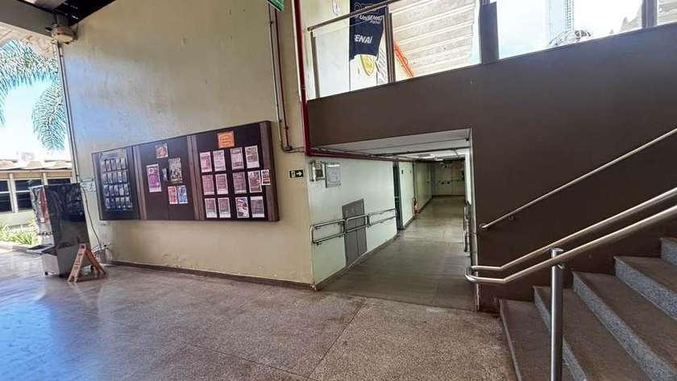
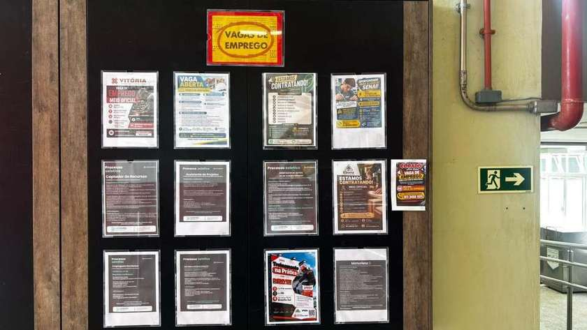
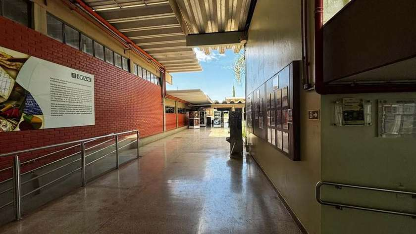
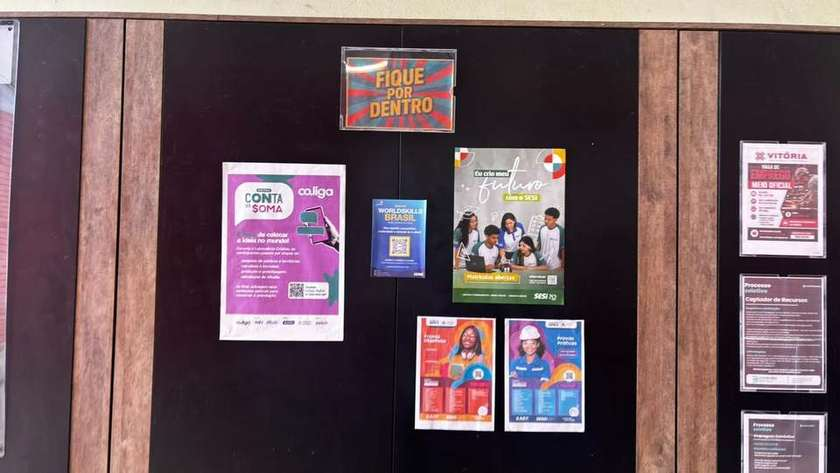
Fotografias fornecidas pela equipe do projeto. Protótipo independente.
Conheça a experiência. Explore os fluxos. Imagine o seu SENAI mais conectado.
Abrir demonstração interativa